CRVI003103Uwe Loesch - Untitled

CRVI002545Gudrun Baudisch - Ceramic lamp stand
1928
1928
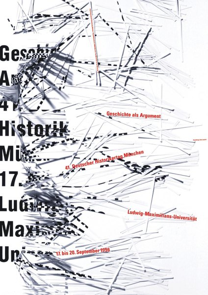
CRVI003106Uwe Loesch - History as an Argument
Poster · 1996
Poster · 1996

CRVI002658Seiichi Hayashi - Untitled (woman in a yellow shirt with swallows)
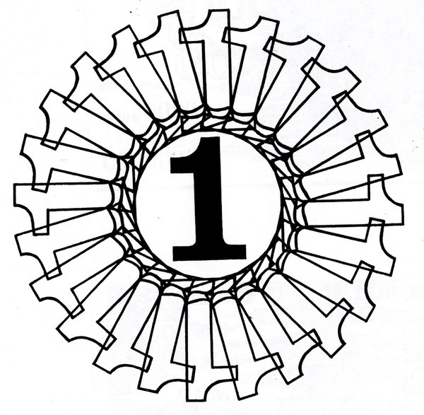
CRVI002919Alexandre Wollner - Central Bank of Brazil — cruzeiro device

CRVI002703Hiromu Hara - XII Olympiad Tokyo 1940
1936
1936
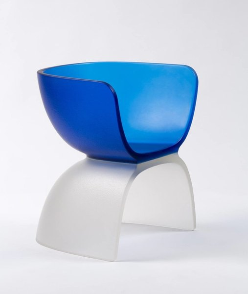
CRVI003205Marc Newson - Blue glass chair
2017
2017
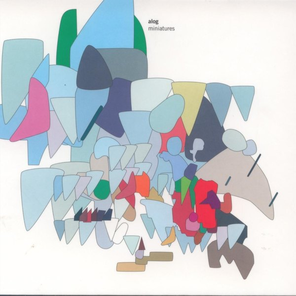
CRVI002870Kim Hiorthøy - Alog — Miniatures
2005
2005

CRVI002533Mingering Mike - "I'm Superman" b/w "Blind in One Eye"

CRVI002748Unattributed - Untitled (pink and white ruffles)

CRVI002930Dafi Kühne - Tunnel 2
2023
2023

CRVI002708Mitsuo Katsui - 生かす文字 (Letters and Life)
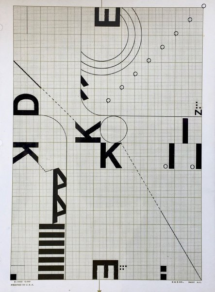
CRVI003138Aaron Marcus - Untitled
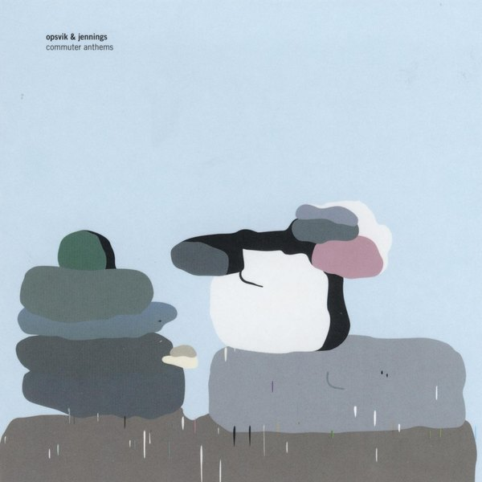
CRVI002983Kim Hiorthøy - Opsvik & Jennings — Commuter Anthems
2007
2007

CRVI002671Ikko Tanaka - The New Spirit of Japanese Design: Print
1984
1984
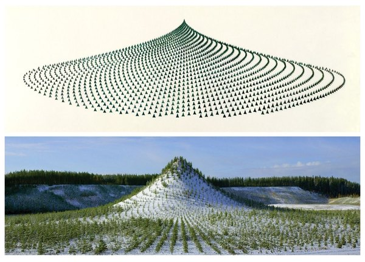
CRVI003056Agnes Denes - Tree Mountain — A Living Time Capsule
1992
1992

CRVI002854April Greiman - DOES IT MAKE SENSE? Design Quarterly #133
1986
1986

CRVI002534Josef Hoffmann - Cameo glass vase
1911
1911

CRVI002590Johnny Pacheco - El Maestro
1975
1975

CRVI002513Josef Müller-Brockmann - Juni-Festwochen Zürich 1959
1959
1959

CRVI002805Wolfgang Weingart - Kunstkredit 1982/83
1983
1983

CRVI003044Ferdinand Hodler - Thunersee mit symmetrischer Spiegelung

CRVI002928Dafi Kühne - Karl Bickel — Zwei Ansätze, ein Medium
2025
2025

CRVI002840Maurizio Cattelan and Pierpaolo Ferrari - Toilet Paper, Diamond Collection

CRVI001827Victor Vasarely - Sinlag II (Blue with Red)

CRVI001158John Scofield - Hand Jive
Designed by Mark Larson, photograph by Patti Perret · Blue Note CDP 7243 8 27327 2 3 · 1994
Designed by Mark Larson, photograph by Patti Perret · Blue Note CDP 7243 8 27327 2 3 · 1994

CRVI001201Osibisa - Heads
Painting by Mati Klarwein · Decca · 1972
Painting by Mati Klarwein · Decca · 1972

CRVI001709Alexej von Jawlensky - Girl with the Green Face
1910
1910
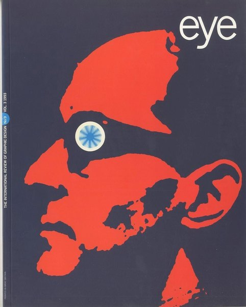
CRVI003087Unknown - Eye no. 9
The International Review of Graphic Design, vol. 3, 1993 - cover · 1993
The International Review of Graphic Design, vol. 3, 1993 - cover · 1993

CRVI000619Gail Bichler - Is Google Too Powerful?
The New York Times Magazine, February 25 2018 · 2018
The New York Times Magazine, February 25 2018 · 2018

CRVI000534D.W. Pine - Delete 'Facebook'?
TIME, October 25-November 1, 2021 · 2021
TIME, October 25-November 1, 2021 · 2021

CRVI001222Mati Klarwein - Untitled
Painting · plate P16-vol2-87 on the artist's own site
Painting · plate P16-vol2-87 on the artist's own site

CRVI001079Kim Laughton - Untitled
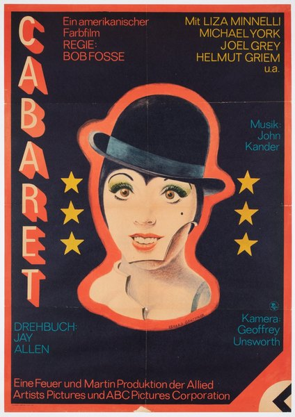
CRVI003222Erhard Grüttner - Cabaret
East German film poster, A1 · 1975
East German film poster, A1 · 1975
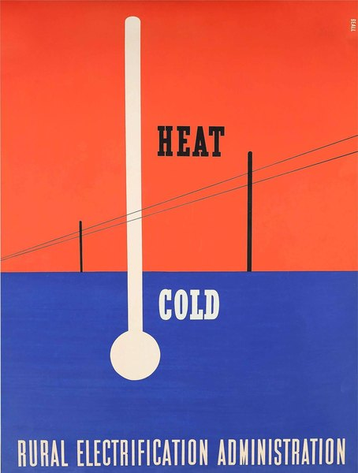
CRVI003201Lester Beall - Untitled

CRVI001838Carlos Cruz-Diez - Couleur additive
1970
1970

CRVI001223Mati Klarwein - Untitled
Painting · plate P17-vol2-87 on the artist's own site
Painting · plate P17-vol2-87 on the artist's own site

CRVI002364Bruno Munari - Negative-Positive
1991
1991
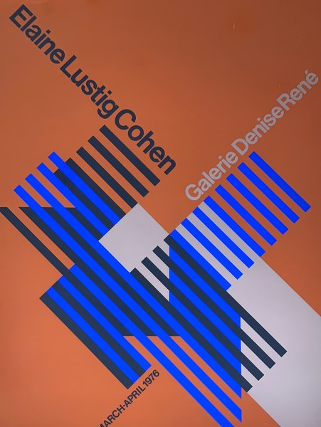
CRVI003173Elaine Lustig Cohen - Denise René
Gallery poster · 1976
Gallery poster · 1976

CRVI001793Jules Olitski - Born in Snovsk
1962
1962

CRVI002953Mitsuo Katsui - poster

CRVI000443David Pelham - The Drowned World
Cover for J. G. Ballard · Penguin Science Fiction · 1974
Cover for J. G. Ballard · Penguin Science Fiction · 1974

CRVI002933Dafi Kühne - Kunststipendien
2021
2021

CRVI001646Akseli Gallen-Kallela - Head of a man at a blue window

CRVI001545Lois Mailou Jones - Composition with African head and figure

CRVI001986Njideka Akunyili Crosby - Re-Branding My Love
2011
2011

CRVI002584Fania All Stars - Fania All Stars Featuring Jan Hammer
1986
1986

CRVI002638Josef Maria Auchentaller - Studie zu einem Placat in 3 Farben

CRVI000825Seymour Chwast - Canto XVIII, PPG #52
Push Pin Graphic #52 · 46 × 71 cm · 1967
Push Pin Graphic #52 · 46 × 71 cm · 1967

CRVI002142Sherrie Levine - After Mondrian

CRVI002059Christina Quarles - Exhibition image
2023
2023

CRVI001425Unidentified - Divisionist portrait of a bearded man

CRVI000293Jean-Jacques Perrey - Moog Indigo
Designer unknown · Vanguard · 1970
Designer unknown · Vanguard · 1970

CRVI002640Ferdinand Hodler - Secession XIX. Ausstellung
1904
1904

CRVI001773Nicolas de Staël - Musicians
1953
1953

CRVI002354René Magritte - Man in a bowler hat with a birdcage

CRVI002635Josef Maria Auchentaller - Kathreiners Kneipp-Malz-Kaffee
1898
1898

CRVI001802Andy Warhol - Mao
1972
1972

CRVI002461Eric Yahnker - Wrecking Ball
2014
2014

CRVI001623André Derain - Henri Matisse
1905
1905

CRVI003211Richard Paul Lohse - Untitled

CRVI000765Paula Scher - The Diva is Dismissed
Serigraph · 116.8 × 76.5 cm · 1994
Serigraph · 116.8 × 76.5 cm · 1994

CRVI002542Berthold Löffler - Kunstschau Wien 1908
1908
1908

CRVI000126Shigeo Fukuda - The World of Shigeo Fukuda in U.S.A.
M.H. de Young Memorial Museum, San Francisco · Junior Art Center, Los Angeles · Santa Barbara Museum of Art · 1971
M.H. de Young Memorial Museum, San Francisco · Junior Art Center, Los Angeles · Santa Barbara Museum of Art · 1971

CRVI001672Giacomo Balla - Girl Running on a Balcony
1912
1912

CRVI000553Graeme James - The Horror Ahead
The Economist, March 5-11, 2022 · 2022
The Economist, March 5-11, 2022 · 2022

CRVI000012Foodman - Ez Minzoku
Artwork by Ellen Thomas, Keith Rankin · 2017
Artwork by Ellen Thomas, Keith Rankin · 2017

CRVI000069Cluster - Cluster Il
Designer unknown · Brain · 1972
Designer unknown · Brain · 1972
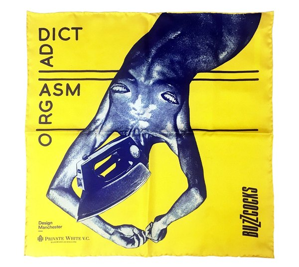
CRVI003202Malcolm Garrett - Untitled

CRVI002758Barkley L. Hendricks - Sir Nelson. Solid!
1970
1970

CRVI002899Neville Garrick - Burning Spear — Man In The Hills
1976
1976

CRVI003212Uwe Lausen - Landschaft mit Liegestuhl
1968
1968

CRVI002896Tom Christopher - Bill Evans — California Here I Come
1982
1982

CRVI003041Franz Gertsch - Huaa…!
1969
1969

CRVI002660Unattributed - セチュアンの善人 (The Good Person of Szechwan)

CRVI000833James McMullan - Head Out to Oz
Push Pin Graphic #52 · 71 × 46 cm · 1967
Push Pin Graphic #52 · 71 × 46 cm · 1967

CRVI000859Julian Stanczak - Conferring Blue
Screenprint · 68.6 × 68.6 cm · 1981
Screenprint · 68.6 × 68.6 cm · 1981

CRVI002492Bruno Munari - Negativo positivo.
1985
1985
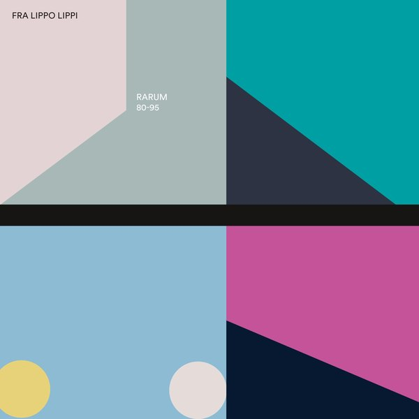
CRVI002880Kim Hiorthøy - Fra Lippo Lippi — Rarum 80-95
2018
2018

CRVI000828Seymour Chwast - Penny Pitch
68.6 × 53.3 cm · 1967
68.6 × 53.3 cm · 1967

CRVI002595La Lupe - La Lupe Es La Reina / The Queen
1969
1969
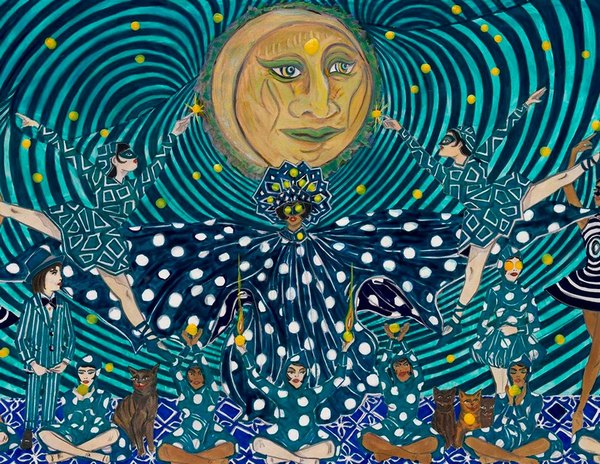
CRVI002738Marcel Dzama - That light is from the moon (detail)
2022
2022

CRVI000129Koichi Sato - Soap Bubbles Floated, They Floated Into Outer Space
Produced by Human Design · Fuji Television
Produced by Human Design · Fuji Television

CRVI002579Orchestra Harlow - Orchestra Harlow Presenta a Ismael Miranda
1968
1968

CRVI000003Thomas Fehlmann - Visions Of Blah
Designed by Bianca Strauch · Kompakt · 2002
Designed by Bianca Strauch · Kompakt · 2002

CRVI000857Julian Stanczak - Homage
Acrylic on canvas · 1990
Acrylic on canvas · 1990
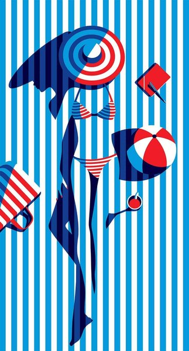
CRVI003079Malika Favre - Untitled

CRVI001155John Coltrane - Infinity
Designed by Richard Taylor, photograph by Chester Sheard · Impulse! AS-9225 · 1972
Designed by Richard Taylor, photograph by Chester Sheard · Impulse! AS-9225 · 1972
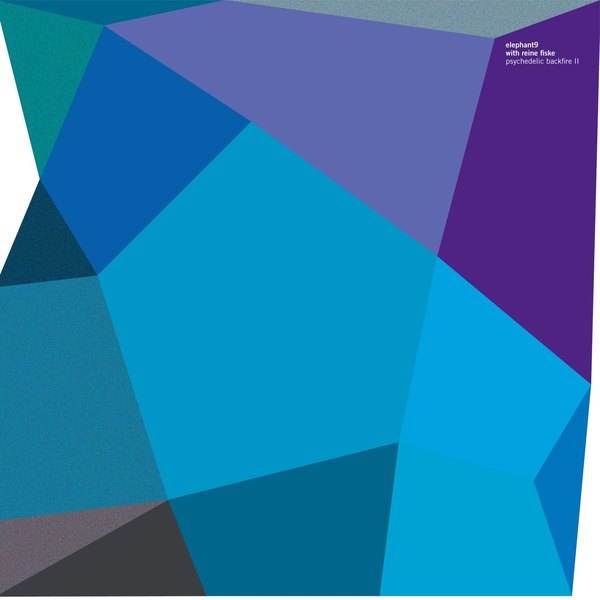
CRVI002882Kim Hiorthøy - Elephant9 With Reine Fiske — Psychedelic Backfire II
2019
2019

CRVI002082Hito Steyerl - Liquidity Inc.
2014
2014

CRVI002360Amy Sherald - Miss Everything (Unsuppressed Deliverance)
2013
2013
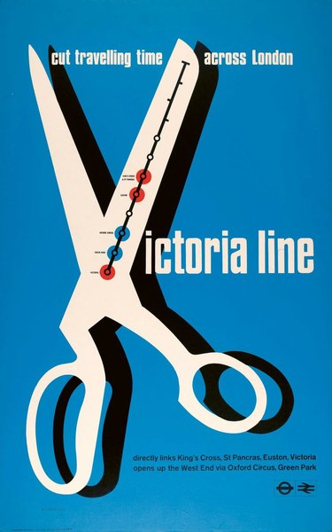
CRVI003135Tom Eckersley - Untitled

CRVI001197Mati Klarwein - Alexander's Dream
Painting
Painting

CRVI000489R. Kikuo Johnson - The Robots Are Coming
MIT Technology Review, May/June 2024 · 2024
MIT Technology Review, May/June 2024 · 2024

CRVI000325Lone - Ecstasy & Friends
Designer unknown · Werk Discs · 2009
Designer unknown · Werk Discs · 2009
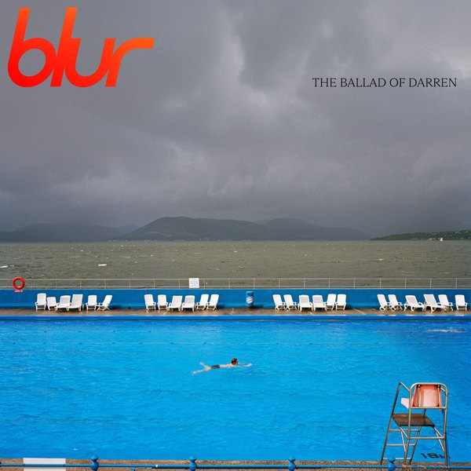
CRVI003236Martin Parr - Blur: The Best Of
Album artwork
Album artwork

CRVI002174Kim Whanki - 25-V-70 #173
1970
1970

CRVI001141Jackie McLean - Bluesnik
Designed by Reid Miles, photograph by Francis Wolff · Blue Note BLP 4067 · 1962
Designed by Reid Miles, photograph by Francis Wolff · Blue Note BLP 4067 · 1962

CRVI001760Josef Albers - Study for Homage to the Square: Beaming
1963
1963
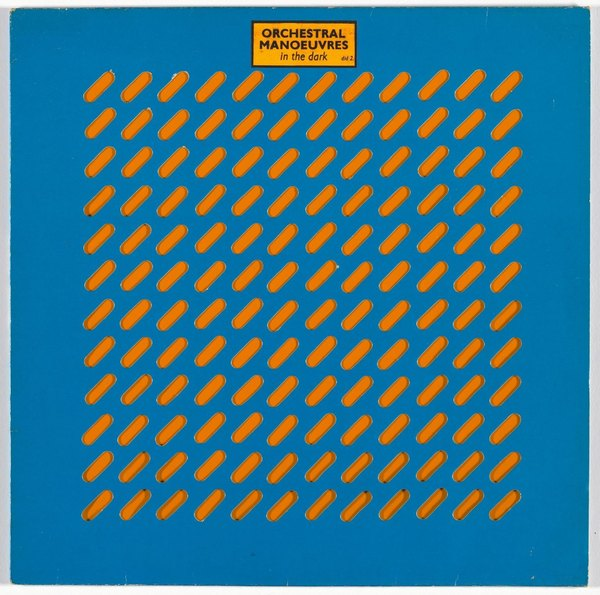
CRVI003069Peter Saville - Orchestral Manoeuvres in the Dark
LP sleeve, Dindisc DID 2 · 1980
LP sleeve, Dindisc DID 2 · 1980

CRVI000065Blank Banshee - Blank Banshee 0
Designer unknown · Hologram Bay · 2012
Designer unknown · Hologram Bay · 2012

CRVI002143Richard Prince - Untitled (Cowboy)
1989
1989

CRVI001159Kenny Burrell - Blue Lights, Volumes 1 & 2
Designed by Reid Miles, artwork by Andy Warhol · Blue Note BLP 1596 · 1958
Designed by Reid Miles, artwork by Andy Warhol · Blue Note BLP 1596 · 1958
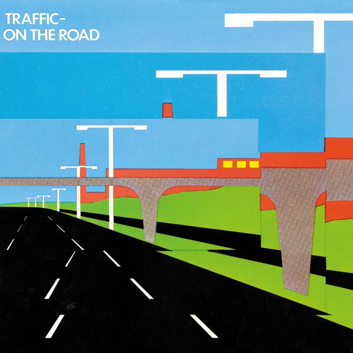
CRVI002916Ann Borthwick - Traffic — On The Road
1973
1973

CRVI000178Sonny Rollins - Sonny Rollins
Designed by Bob Weinstock · Prestige LP 7029 · 1953
Designed by Bob Weinstock · Prestige LP 7029 · 1953

CRVI000626Anton Ioukhnovets, Mario Sorrenti - Make America Happy Again
Esquire, February 2017 · 2017
Esquire, February 2017 · 2017

CRVI002398Ray Barretto con Adalberto Santiago - Rican/Struction
1979
1979

CRVI000705Heavy J - Pee-Wee's Big Adventure
Hand-painted Ghanaian film poster
Hand-painted Ghanaian film poster

CRVI002346René Magritte - Voice of Space (La voix des airs)
1931
1931
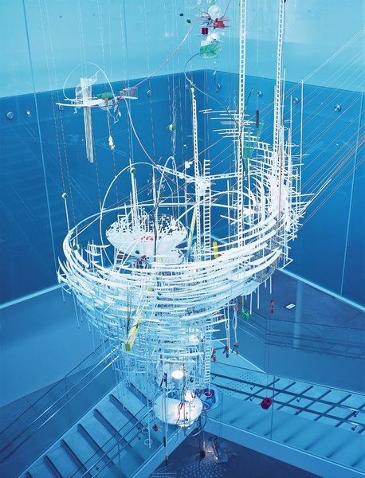
CRVI003053Sarah Sze - untitled

CRVI001992Tschabalala Self - Two Headed
2023
2023

CRVI002968Keiichi Tanaami - untitled

CRVI000183Dee Dee Sharp - Songs of Faith
Designer unknown · Cameo · 1962
Designer unknown · Cameo · 1962
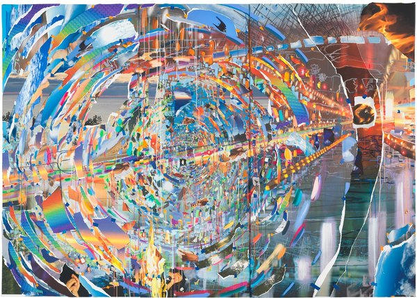
CRVI003052Sarah Sze - untitled

CRVI002838Maurizio Cattelan and Pierpaolo Ferrari - Untitled (roses interior)

CRVI000307Der Plan - Normalette Surprise
Designer unknown · Ata Tak · 1981
Designer unknown · Ata Tak · 1981

CRVI001059Ingo Swann - Cosmic painting
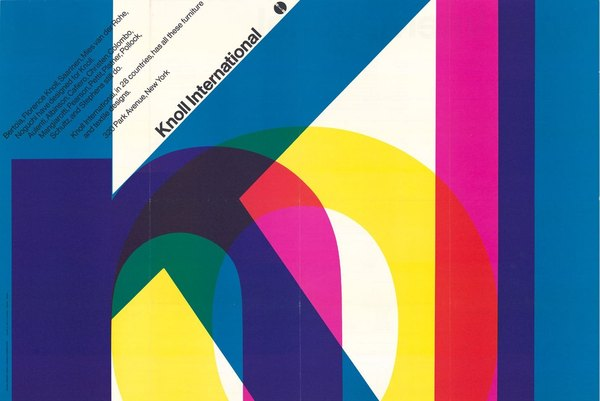
CRVI003233Massimo Vignelli - Knoll International

CRVI000809Mark Tansey - Xing
Oil on canvas · 223.5 × 152.4 cm · 2021
Oil on canvas · 223.5 × 152.4 cm · 2021

CRVI002707Mitsuo Katsui - 晴れる文字 (Letters and Sunlight)

CRVI001957Kerry James Marshall - Vignette 13
2008
2008

CRVI000230Me&You - Floating Heavy
Designer unknown · Tru Thoughts · 2007
Designer unknown · Tru Thoughts · 2007

CRVI001587Richard Estes - Car with reflected buildings

CRVI002601Muddy Waters - The London Muddy Waters Sessions
1972
1972

CRVI001849Unidentified - Concentric circle composition

CRVI001963Mark Bradford - Untitled (detail)

CRVI000646Scott Seymour, Kevin Val Aelst, Rose Engelland - The Isolated Black Professor
The Chronicle Review, January 30 2015 · 2015
The Chronicle Review, January 30 2015 · 2015

CRVI002936Ralph Schraivogel - poster
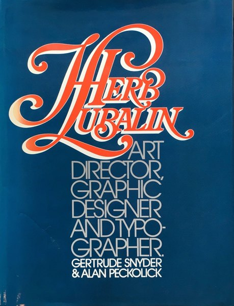
CRVI003154Herb Lubalin - Herb Lubalin: Art Director, Graphic Designer and Typographer
Monograph cover
Monograph cover

CRVI001411Robert Rauschenberg - Banner (Stoned Moon)
Robert Rauschenberg · 1969 · lithograph, Gemini G.E.L. · 1969
Robert Rauschenberg · 1969 · lithograph, Gemini G.E.L. · 1969

CRVI000639Maurizio Cattelan, Pierpaolo Ferrari - VICE, March
VICE, March 2016 · 2016
VICE, March 2016 · 2016

CRVI000667Simon Abranowicz - How I Broke My Smartphone Addiction
GQ, November 27, 2019 · 2019
GQ, November 27, 2019 · 2019

CRVI000405Elektro Guzzi - Elektro Guzzi
Designer unknown · Macro · 2010
Designer unknown · Macro · 2010

CRVI000647Françoise Mouly, Kadir Nelson - 90th Anniversary [Eustace Tilley]
The New Yorker, February 23 2015 · 2015
The New Yorker, February 23 2015 · 2015
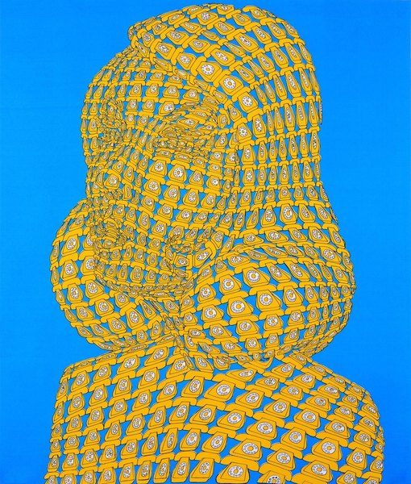
CRVI003160Thomas Bayrle - Christel von der Post
1970
1970

CRVI000429Yeni Türkü - Akdeniz Akdeniz
Designer unknown · Goksoy Plakçlik · 1982
Designer unknown · Goksoy Plakçlik · 1982

CRVI000845domus - domus 1111
April 2026 · 2026
April 2026 · 2026

CRVI002833Maurizio Cattelan and Pierpaolo Ferrari - Toilet Paper, December 2012
2012
2012

CRVI001967Ligel Lambert - Portrait of Glenn Ligon

CRVI001328Cornelius Cardew / The Scratch Orchestra - The Great Learning
Maker unidentified · Deutsche Grammophon
Maker unidentified · Deutsche Grammophon

CRVI000477Justin Metz - The Centre Cannot Hold
The Economist, June 29-July 5, 2024 · 2024
The Economist, June 29-July 5, 2024 · 2024

CRVI002743Unattributed - Untitled (model in blue and violet)

CRVI001160Kenny Burrell - Midnight Blue
Designed by Reid Miles, photograph by Francis Wolff · Blue Note BLP 4123 · 1963
Designed by Reid Miles, photograph by Francis Wolff · Blue Note BLP 4123 · 1963

CRVI000826Seymour Chwast - The Nose #11, Tricks
The Nose · 18 × 28 cm · 2005
The Nose · 18 × 28 cm · 2005

CRVI002599Johnny Pacheco and Melón - Flying High
1983
1983
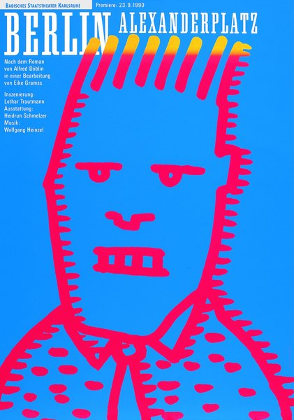
CRVI003090Frieder Grindler - Die Gerechten
Poster, Badisches Staatstheater Karlsruhe · 1990
Poster, Badisches Staatstheater Karlsruhe · 1990

CRVI000798Joseph Beuys - [Beuys with the Eurasienstab]
Signed photograph
Signed photograph

CRVI000666Lesley Q. Palmer, Katrina Zook, Dan Saelinger - Inside the Social Security Phone Scam
AARP The Magazine, April/May 2019 · 2019
AARP The Magazine, April/May 2019 · 2019
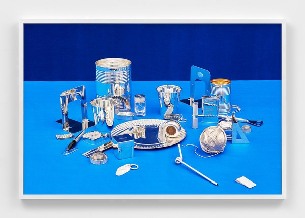
CRVI002745Unattributed - Untitled (silver objects on blue)

CRVI001882Larry Bell - Glass installation

CRVI003184Niklaus Troxler - Untitled
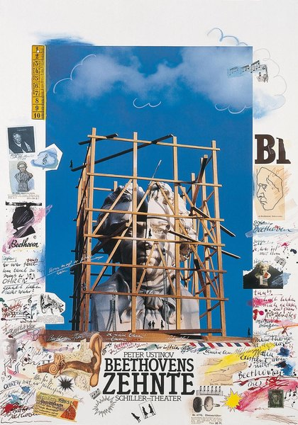
CRVI003121Holger Matthies - Untitled
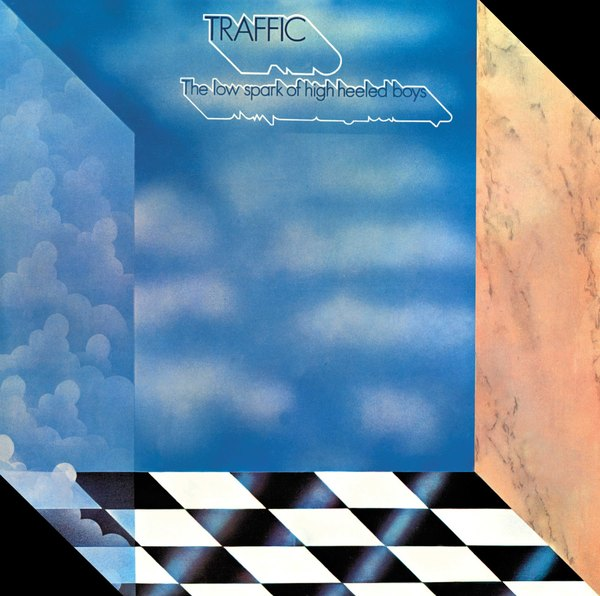
CRVI002917Tony Wright - Traffic — The Low Spark Of High Heeled Boys
1971
1971

CRVI002210Piet Mondrian - Avond (Evening): The Red Tree
1910
1910

CRVI002681Kazumasa Nagai - The 1st International Triennial of Poster in Toyama
1985
1985

CRVI000712Tame Impala - Eventually
Designed by Robert Beatty · 2015
Designed by Robert Beatty · 2015

CRVI002070Unidentified - Disrupted Frequencies (detail)

CRVI002812Rosmarie Tissi - World City Expo Tokyo '96
1994
1994

CRVI002123Faith Ringgold - Dancing on the George Washington Bridge

CRVI000842Ottagono - Ottagono 80
marzo 1986 · anno 21 · 1986
marzo 1986 · anno 21 · 1986

CRVI000013Giant Claw - Dark Web
Artwork by Ellen Thomas, Keith Rankin · 2014
Artwork by Ellen Thomas, Keith Rankin · 2014

CRVI002863Rosmarie Tissi - Tips

CRVI001974Kehinde Wiley - Portrait of Jorge Gitoo Wright

CRVI000421The UMC's - Fruits Of Nature
Designer unknown · Wild Pitch · 1991
Designer unknown · Wild Pitch · 1991

CRVI002605Johnny Pacheco - Volando Bajito
1968
1968

CRVI001796Alma Thomas - Starry Night and the Astronauts
1972
1972

CRVI000678Gail Bichler, Kathy Ryan, Maurizio Cattelan, Pierpaolo Ferrari - The Tech & Design Issue
The New York Times Magazine, November 17, 2019 · 2019
The New York Times Magazine, November 17, 2019 · 2019

CRVI001069David Rudnick - Poster for Making Time
Poster · Philadelphia
Poster · Philadelphia

CRVI002757Takehisa Yumeji - 化粧の秋 (Kesho no Aki, Makeup in Autumn)
1924
1924

CRVI000089FUSE - Dimension Intrusion
Designer unknown · Plus 8 Records · 1993
Designer unknown · Plus 8 Records · 1993

CRVI000424Lee Hazlewood - Love and Other Crimes
Designer unknown · Reprise Records · 1968
Designer unknown · Reprise Records · 1968

CRVI002186René Magritte - Nocturne
1925
1925

CRVI000598Unknown - We Have Seen the Future and It's New Jersey
New York, June 20, 1977 · 1977
New York, June 20, 1977 · 1977

CRVI002524Mingering Mike - Slow 'n' Easy

CRVI001363Andrew Kuo - Decoding a Trickster — Aphex Twin, 'Syro'
Chart for The New York Times · 2014-09-28 · 2014
Chart for The New York Times · 2014-09-28 · 2014

CRVI001699Benedetta Cappa - Motorboat
1923
1923

CRVI000286Herbert Bayer - Bauhaus Exhibition Poster - 50 Years of Bauhaus
Poster
Poster

CRVI000706C.A. Wisely - My Neighbor Totoro
Hand-painted Ghanaian film poster
Hand-painted Ghanaian film poster

CRVI001065Lezley Saar - Cell Realization

CRVI000813Mark Tansey - Revelever
Oil on canvas
Oil on canvas

CRVI002347René Magritte - The Art of Living (L'art de vivre)
1967
1967

CRVI000212Unknown - Dance Break
Reaction GIF · Saturday Night Live · 58 frames, 4.6s loop
Reaction GIF · Saturday Night Live · 58 frames, 4.6s loop

CRVI000016Frank Coe, Forrest J. Ackerman - Music For Robots
Designed by Frank Coe · Science Fiction Records · 1961
Designed by Frank Coe · Science Fiction Records · 1961

CRVI001621Georges Lacombe - Marine bleue, Effet de vague
c. 1893
c. 1893
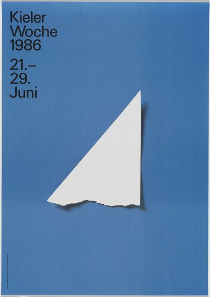
CRVI003128Pierre Mendell - Kieler Woche 1986
Poster · 1986
Poster · 1986
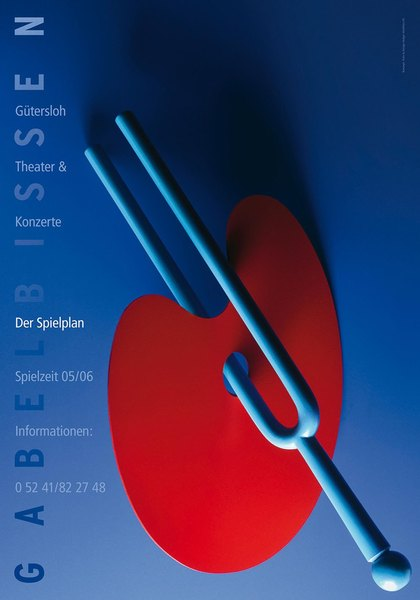
CRVI003122Holger Matthies - Gabelbissen
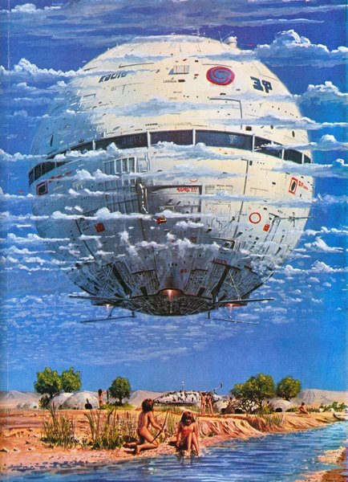
CRVI003082Peter Elson - Untitled
for Science Fiction Monthly
for Science Fiction Monthly
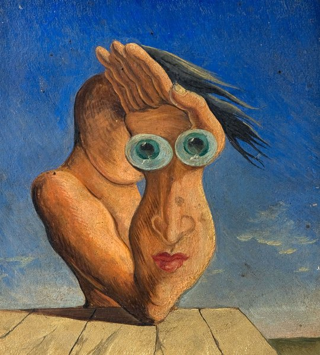
CRVI003185Victor Brauner - Composition with Portrait
1935
1935

CRVI003187Victor Brauner - Composition with Portrait
1930-1935
1930-1935

CRVI001711Alexej von Jawlensky - The Hunchback
1905
1905
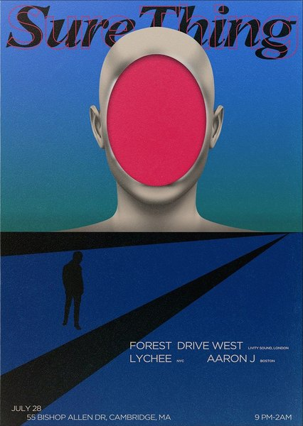
CRVI003091Frieder Grindler - Untitled

CRVI002600Bo Diddley, Muddy Waters and Little Walter - Super Blues
1967
1967

CRVI000669Unknown - Hong Kong's Countdown to 2047
Bloomberg Businessweek, August 19, 2019 · 2019
Bloomberg Businessweek, August 19, 2019 · 2019

CRVI001073Kim Laughton - Untitled
Published by Raddlounge
Published by Raddlounge

CRVI000023NxxxxxS - Fujita Scale
Artwork by Ivan Peev · Headcount Records · 2014
Artwork by Ivan Peev · Headcount Records · 2014
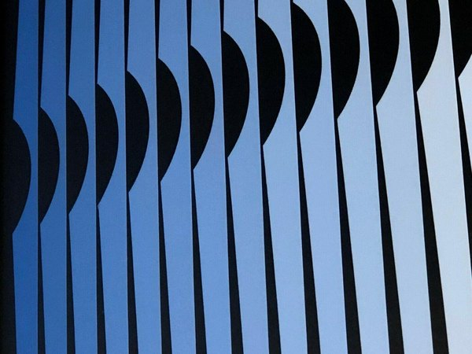
CRVI002781Miodrag Đorđević - Kinetic gouache on paper
1960
1960

CRVI001229Pharoah Sanders - Elevation
Designed by Tim Bryant, artwork by Bodhi Wind · Impulse! AS-9261 · 1974
Designed by Tim Bryant, artwork by Bodhi Wind · Impulse! AS-9261 · 1974
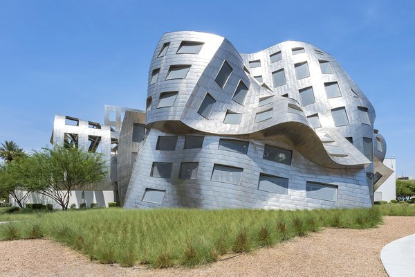
CRVI003197Frank Gehry - Untitled building

CRVI001659Albert Gleizes - On a Sailboat

CRVI001823Unidentified - Coloured rhomboid composition

CRVI002952Mitsuo Katsui - NOH 能

CRVI002116Ellsworth Kelly - Blue on White
1961
1961

CRVI000561Marshall Mckinney - Saving the Wild South
Garden & Gun, October/November 2022 · 2022
Garden & Gun, October/November 2022 · 2022

CRVI002280John Baldessari - Three figures with a framed painting

CRVI003171Camille Graeser - Permutation
1969
1969

CRVI001996Firelei Báez - Untitled
2019
2019
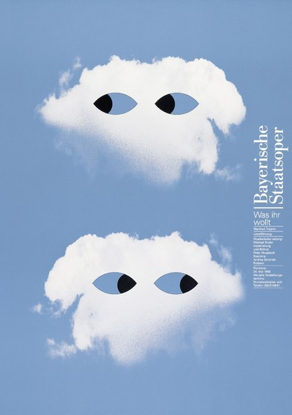
CRVI003127Pierre Mendell - The Twelfth Night
Theatre poster · 1998
Theatre poster · 1998

CRVI002957Yusaku Kamekura - Nippon Kogaku K.K.
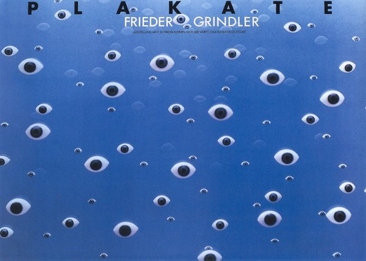
CRVI003088Frieder Grindler - Untitled

CRVI002589Celia Cruz and Johnny Pacheco - Celia & Johnny
1974
1974
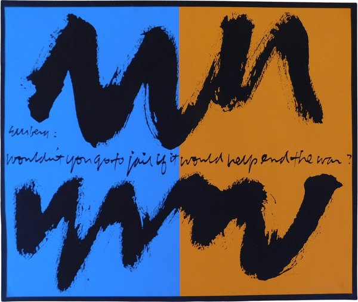
CRVI002924Corita Kent - wouldn't you go to jail if it would help end the war?

CRVI000337Various Artists - Recorded Live Motortown Revue In Paris
Designer unknown · Universal · 2016
Designer unknown · Universal · 2016

CRVI000234Portishead - Dummy
Designer unknown · Go! Beat · 1994
Designer unknown · Go! Beat · 1994

CRVI000478Tim O'Brien - American Oligarchy
Mother Jones, January + February 2024 · 2024
Mother Jones, January + February 2024 · 2024

CRVI002802Rosmarie Tissi - Serenaden 96
1996
1996

CRVI001877Frank Stella - Hampton Roads
1961
1961
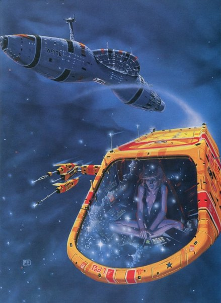
CRVI003081Peter Elson - Star Quest
from Galactic Encounters
from Galactic Encounters

CRVI000778Paul Rand - Boston: A New National Park
National Park Service · 1975
National Park Service · 1975
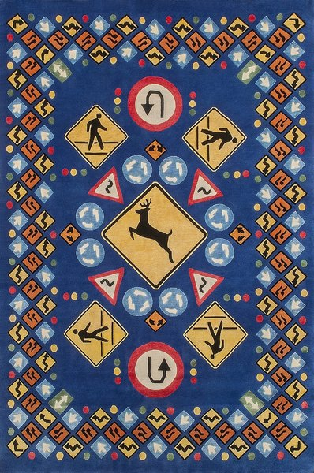
CRVI003180Lance Wyman - Road signs
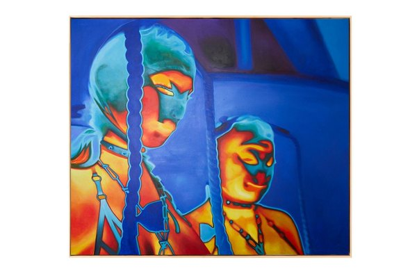
CRVI003072Harmony Korine - Untitled
from AGGRESSIVE DR1FTER · 2023
from AGGRESSIVE DR1FTER · 2023

CRVI000810Mark Tansey - Invisible Hand
Oil on canvas · 213 × 182.6 cm · 2011
Oil on canvas · 213 × 182.6 cm · 2011

CRVI000811Mark Tansey - Apple Tree
Oil on canvas · 200.7 × 254 cm · Museum of Fine Arts, Houston · 2008–09
Oil on canvas · 200.7 × 254 cm · Museum of Fine Arts, Houston · 2008–09

CRVI002807Rosmarie Tissi - Serenaden 93
1993
1993

CRVI000146Bobby Timmons - Soul Time
Designed by Ken Deardoff · 1960
Designed by Ken Deardoff · 1960
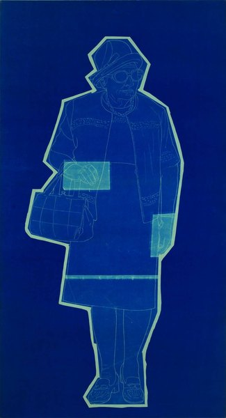
CRVI003037Edmund Alleyn - Femme dans la foule (8)
1972
1972

CRVI002245Mark Rothko - Untitled

CRVI001327Peter Lloyd - Tron — concept art, the Solar Sailer
Illustration by Peter Lloyd · 1982
Illustration by Peter Lloyd · 1982

CRVI001826Victor Vasarely - Pal-Ket
1974
1974

CRVI001644Cuno Amiet - Moonlit Landscape
1904
1904

CRVI002446Roberto Matta - Comment une conscience se fait univers (peut être)
1992
1992

CRVI002554Celia Cruz - Homenaje a los Santos Vol. 2
1965
1965

CRVI002523Josef Müller-Brockmann - Strawinsky / Fortner / Berg (blue printing)
1955
1955
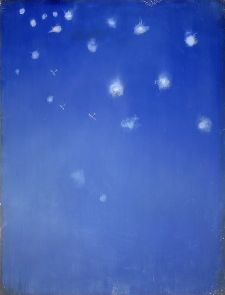
CRVI002752C. R. W. Nevinson - Archies
1916
1916

CRVI002809Unattributed - Kieler Woche 1990
1990
1990

CRVI000788Paul Rand - Skull and Olive Branch
Vietnam anti-war poster · 1969
Vietnam anti-war poster · 1969

CRVI000399Mr. Fingers - Introduction
Designer unknown · MCA Records · 1992
Designer unknown · MCA Records · 1992

CRVI002386Emil Nolde - Red Clouds (Rote Wolken)

CRVI001574Georg Scholz - Exotische Prinzessin
1919
1919

CRVI002862Rosmarie Tissi - Graphis 241
1986
1986

CRVI002330Ed Ruscha - Norm's, La Cienega, on Fire
1964
1964

CRVI001683Gino Severini - Ballerina in Blue
1912
1912
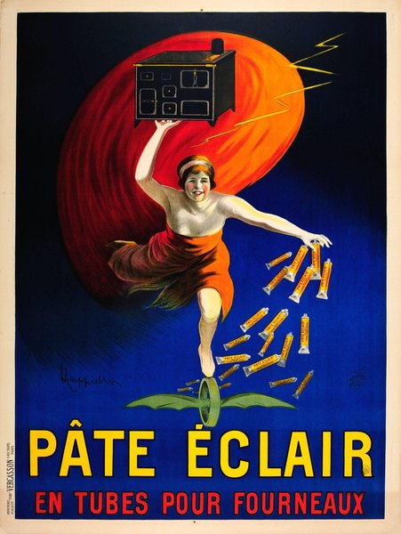
CRVI002778Leonetto Cappiello - Pâte Éclair

CRVI000613Ivan Chermayeff, Thomas Geismar - Whitney Museum of American Art, 75th & Madison, Open Free Tuesday Evenings
Lithograph, 116.8 × 76.1 cm · 1977
Lithograph, 116.8 × 76.1 cm · 1977

CRVI001880Larry Bell - Glass installation

CRVI001918James Turrell - Munson (Blue)

CRVI001833Richard Anuszkiewicz - Marriage of Reds and Oranges
1992
1992

CRVI002499Unattributed - LIFE. — Numazu Port Deep Sea Aquarium

CRVI001236Mati Klarwein - Bavarian Angel
Painting · plate V11-Bavarian-Angel on the artist's own site
Painting · plate V11-Bavarian-Angel on the artist's own site

CRVI002886Kim Hiorthøy - Elephant9 — Mythical River
2024
2024

CRVI000492Joe Darrow - Sign Here, My Stallion
New York, July 1-14, 2024 · 2024
New York, July 1-14, 2024 · 2024

CRVI002839Maurizio Cattelan and Pierpaolo Ferrari - Toilet Paper, Issue 9
2014
2014

CRVI003182Niklaus Troxler - Monk
Jazz poster · 1986
Jazz poster · 1986

CRVI002328Ed Ruscha - OOF
1962-63
1962-63

CRVI002915Paul Francis - The Gene Harris Quartet — Listen Here!
1989
1989

CRVI001353Elvis Costello & The Attractions - High Fidelity
Designed by Barney Bubbles · F-Beat · 1980
Designed by Barney Bubbles · F-Beat · 1980

CRVI000075H. Tical - Impact Synthesized Sound And Music
Designer unknown · Vedette Records · 1971
Designer unknown · Vedette Records · 1971

CRVI002361Amy Sherald - Trans Forming Liberty
2024
2024

CRVI002421Bruno Munari - Peano Curves
1991
1991

CRVI002393Bruce Nauman - One Hundred Live and Die
1984
1984

CRVI002504Milton Glaser - Kandinsky
1984
1984

CRVI001762Josef Albers - Red Wall
1956
1956

CRVI001239Mati Klarwein - Live
Painting · plate V23-Live on the artist's own site
Painting · plate V23-Live on the artist's own site

CRVI000472Unknown - Selling Obama
Bloomberg Businessweek
Bloomberg Businessweek

CRVI002404Peter Max - Solar Phenomenon
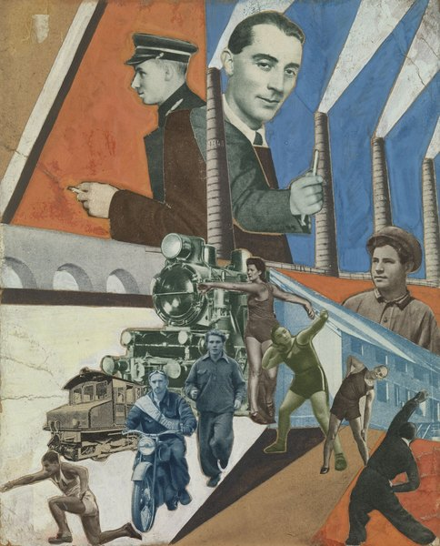
CRVI002963Solomon Telingater - Design for a poster
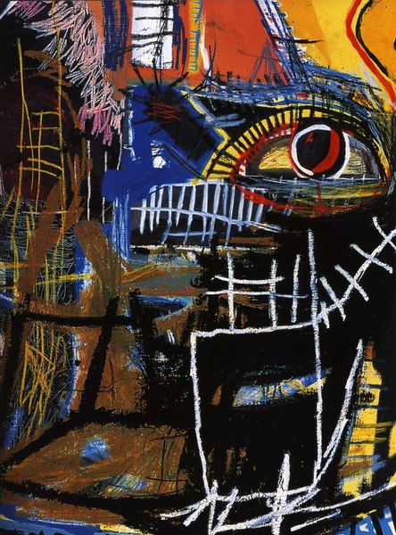
CRVI002732Jean-Michel Basquiat - Head

CRVI002675Kazumasa Nagai - 永井一正の世界展 (The World of Kazumasa Nagai)
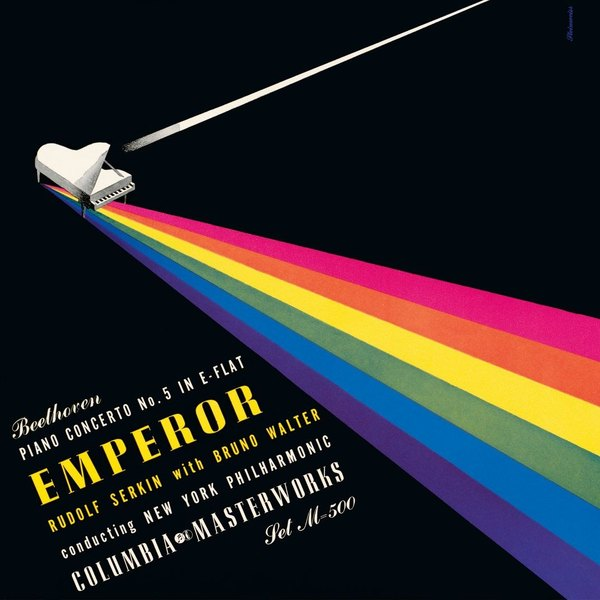
CRVI003166Alex Steinweiss - Untitled

CRVI002506Milton Glaser - The Lovin' Spoonful at Lincoln Center Philharmonic Hall
1968
1968
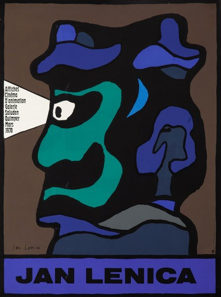
CRVI002786Jan Lenica - Affiches, Cinéma d'animation, Galerie Solothurn
1976
1976

CRVI002617Tito Rodríguez and His Orchestra - In Puerto Azul, Venezuela
1963
1963

CRVI002760Barkley L. Hendricks - Icon for My Man Superman (Superman Never Saved Any Black People — Bobby Seale)
1969
1969

CRVI002594José Fajardo and Johnny Pacheco - Fajardo Y Pacheco
1982
1982
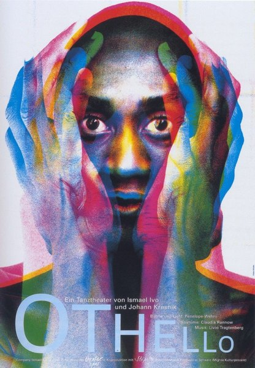
CRVI003093Frieder Grindler - Untitled

CRVI002702Hiromu Hara - アイデア / idea No. 13
1955
1955
CRVI002941Peter Cook - Instant City
1970
1970
CRVI003198Frank Gehry - Walt Disney Concert Hall

CRVI002612The Go-Go's - Vacation
1982
1982
CRVI003080Thomas Danthony - Voyage

CRVI002676Unattributed - コンピュートピア紀元1年 (Computopia, Year One)

CRVI002709Mitsuo Katsui - I'm here (AIR)
1993
1993

CRVI000196Unknown - Hello
Reaction GIF · 40 frames, 2.8s loop
Reaction GIF · 40 frames, 2.8s loop

CRVI002935Ralph Schraivogel - poster

CRVI002734Salvador Dalí - Figure at a Window

CRVI002922Dafi Kühne - Common Water — The Future of an Alpine Resource
2017
2017
CRVI003117Helmut Brade - Denkzettel
Poster to a text by Wilhelm Bartsch
Poster to a text by Wilhelm Bartsch
CRVI003074Frieder Grindler - Untitled
CRVI003094Frieder Grindler - Untitled
CRVI002746Unattributed - Untitled (two figures in circuit-board headpieces)
CRVI002959Jianping He - Hideki Nakajima: Made in Japan. Tokyo (Berlin edition)
2019
2019
CRVI002744Unattributed - Untitled (model in a silver hood)
CRVI003040Leon Golub - painting

CRVI002549Unattributed - Geometric pattern in blue, green and black

CRVI002683Shigeo Fukuda - Kyogen
1981
1981
CRVI003100Konrad Klapheck - Exhibition poster, Galerie Maeght, Paris

CRVI002625Koloman Moser - Reproduktionsvorlage für das Blatt Liebe für Gerlachs Allegorien. Neue Folge, Taf. 35
1895
1895

CRVI002803Rosmarie Tissi - Serenaden 98
1998
1998

CRVI000193Unknown - Dancing
Reaction GIF · 60 frames, 3.6s loop
Reaction GIF · 60 frames, 3.6s loop
CRVI003095Frieder Grindler - Untitled

CRVI002509Dan Rawlinson - Josef Müller-Brockmann
2019
2019

CRVI000203Unknown - Popcorn
Reaction GIF · 60 frames, 6.0s loop
Reaction GIF · 60 frames, 6.0s loop

CRVI003015Kim Hiorthøy - Sky Music (2) — A Tribute To Terje Rypdal
2017
2017

CRVI002911Moshe Brakha - Robert Palmer — Some People Can Do What They Like
1976
1976
CRVI003105Uwe Loesch - Untitled

CRVI002860Rosmarie Tissi - Serenaden 2002
2002
2002

CRVI002698Unattributed - ニッカー ポスターカラー デラックス (Nicker Poster Colour Deluxe)
1964
1964

CRVI002643Wilhelm List - Selbstporträt
1889
1889
CRVI002750C. R. W. Nevinson - The Arrival
1913
1913
CRVI002751C. R. W. Nevinson - Bursting Shell
1915
1915

CRVI002569Willie Colón - Asalto Navideño
1970
1970

CRVI000204Unknown - Roll Safe
Reaction GIF · Kayode Ewumi as Reece Simpson · 21 frames, 1.1s loop · 2016
Reaction GIF · Kayode Ewumi as Reece Simpson · 21 frames, 1.1s loop · 2016

CRVI002929Dafi Kühne - 550 Jahre Glarner Schabziger

CRVI002710Mitsuo Katsui - Hayashi, UCLA Asian Performing Arts Institute
1981
1981

CRVI002677Unattributed - 日仏現代ポスター交流展 (Japan–France Contemporary Poster Exchange)
1986
1986
CRVI002891Unattributed - Julie London — Around Midnight
1960
1960
CRVI002976Kim Hiorthøy - Nils Økland — Bris
2004
2004